This notebook reviews some basic notation and concepts related to neural networks. It will skip many details that would have been covered in your earlier Stochastics and Machine Learning course, but will set a basis for us jumping into more advanced topics in a few chapters.
Before we get started with PyTorch code, I encourage you first to interact with the ConvNetJS demo, specifically the interactive 1D Regression where you can toggle on and off the different layers and plotting functions, as well as the 2D Classification demo to see how a neural network is just performing a series of feature transformations that ultimately lead to a linear classification boundary. These demos help build a good intuition for what is going on before we move onto more obtuse PyTorch code.
Learning Objectives
By the end of this chapter, you should be able to:
Write a minimal PyTorch training loop (forward, loss, zero_grad, backward, step) and explain what each call does and what goes wrong without it.
Build a multilayer perceptron three ways (nn.Module subclass, nn.Sequential, list unpacking) and predict how the activation function shapes the fitted curve.
Explain, from the PCA explained-variance plot and the two-component reconstruction, why a linear projection cannot compress a nonlinearly embedded one-dimensional curve, and contrast this with an autoencoder.
Read latent-space diagnostics (sorted latent standard deviations, covariance matrix, pair plot, parity plot) to judge whether an autoencoder has found an ordered, low-dimensional code.
State the least-volume penalty (geometric mean of latent standard deviations), explain why the decoder needs spectral normalization, and relate least-volume autoencoders to PCA as their linear special case.
Show Code
import numpy as npimport matplotlib.pyplot as pltimport torchimport torch.nn as nnimport torch.optim as optimimport torch.nn.functional as Ffrom sklearn.model_selection import train_test_splitfrom sklearn.decomposition import PCAimport seaborn as snsimport pandas as pd# Fix the random seeds so that every run of this notebook gives the same data and resultsSEED =2torch.manual_seed(SEED)np.random.seed(SEED)
9.1 Example of PyTorch SGD for Linear Regression and a Simple Feed-Forward Network
Show Code
n_samples =30# True Function we want to estimatedef true_func(X): return np.cos(1.5* np.pi * X)# Noisy Samples from the true functionnp.random.seed(SEED)X = np.sort(2*np.random.rand(n_samples)-1)y = true_func(X) + np.random.randn(n_samples) *0.1plt.figure(figsize=(10,10))# Plot the true function:X_plot = np.linspace(-1.5, 1.5, 100)plt.plot(X_plot, true_func(X_plot), '--',label="True function")# Plot the data samplesplt.scatter(X,y, label="Samples")plt.legend(loc="best")plt.show()
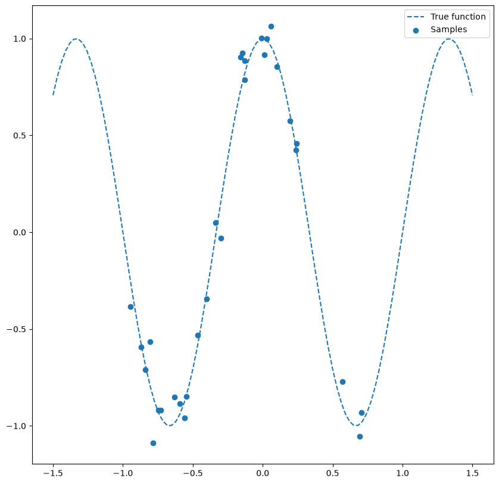
Show Code
X_train, X_test, y_train, y_test = train_test_split( X, y, test_size=0.4, random_state=0)plt.figure(figsize=(7,7))# Plot the data samplesplt.scatter(X_train,y_train, label="Train", c='Blue', s=20, edgecolors='none')plt.scatter(X_test,y_test, label="Test", c='Red', s=50, edgecolors='none')#plt.plot(X_plot, true_func(X_plot), 'g--',label="True function")plt.legend(loc="best")sns.despine()plt.show()
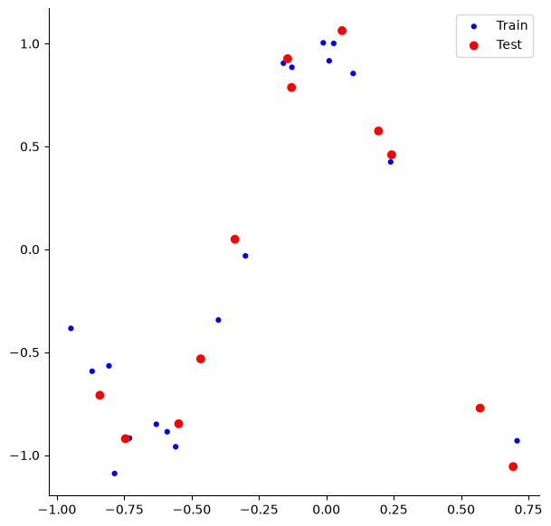
Show Code
# Convert the data into a shape and data-type that PyTorch likesX_train = X_train.reshape(-1,1).astype(np.float32)y_train = y_train.reshape(-1,1).astype(np.float32)
9.1.1 Linear Regression
input_size =1output_size =1# Linear regression model (seeded, so its random initial weights are the same every run)torch.manual_seed(SEED)model = nn.Linear(input_size, output_size)# Loss and optimizercriterion = nn.MSELoss()learning_rate =0.1# alphaoptimizer = torch.optim.SGD(model.parameters(), lr=learning_rate)
9.1.2.1 Example of Defining a Network via the full Module class
class Net(nn.Module):def__init__(self, input_size, hidden_size):super(Net, self).__init__() # Fully-Connected Layer: 1 (input data) -> 5 (hidden node)self.fc1 = nn.Linear(input_size, hidden_size) # Non-Linear Layerself.sigmoid = nn.Sigmoid()# You can try other kinds as well# self.relu = nn.ReLU()# self.elu = nn.ELU()# Fully-Connected Layer: 5 (hidden node) -> 1 (output)self.fc2 = nn.Linear(hidden_size, 1) # Forward pass builds the model prediction from the inputsdef forward(self, x): out =self.fc1(x) out =self.sigmoid(out) out =self.fc2(out)return out# Build the network -- is it not trained yetmodel = Net(input_size=1, hidden_size=5)
9.1.2.2 Example of building a model using the Sequential helper function
9.1.2.3 Example using Python list expansions to help build deeper networks
Show Code
input_size=1hidden_size=7num_hidden_layers =3activation = nn.ReLU# Seed so that this network starts from the same random weights every runtorch.manual_seed(SEED)input_layer = [nn.Linear(input_size, hidden_size), activation()]# Build a fresh Linear layer in every pass of the loop. (Writing# num_hidden_layers*[nn.Linear(hidden_size, hidden_size), activation()] would repeat# the *same* layer object, so all hidden layers would share one set of weights.)hidden_layers = []for _ inrange(num_hidden_layers): hidden_layers.append(nn.Linear(hidden_size, hidden_size)) hidden_layers.append(activation())output_layer = [ nn.Linear(hidden_size, 1) ] # Stack them all togetherlayers = input_layer + hidden_layers + output_layerprint(layers)# Use the * operator to "expand" or "unpack" the listmodel = nn.Sequential(*layers)
# What Loss function should we use? MSE!criterion = nn.MSELoss()# What Optimization procedure should we use?##### Change these and let's see how it affects the model fit #################learning_rate =0.05weight_decay =0.0##########################optimizer = torch.optim.Adam(model.parameters(), lr=learning_rate, weight_decay=weight_decay)
### Train the model# Convert numpy arrays to torch tensorsinputs = torch.from_numpy(X_train)targets = torch.from_numpy(y_train)num_epochs =5000for epoch inrange(num_epochs):## Do Forward pass# Make predictions outputs = model(inputs)# Compute the loss function loss = criterion(outputs, targets)## Update the model# Reset the optimizer gradients optimizer.zero_grad()# Compute the gradient of the loss function loss.backward()# Do an optimization step optimizer.step()# Print the lossif (epoch+1) %200==0:print ('Epoch [{:4}/{}], Loss: {:.4f}'.format(epoch+1, num_epochs, loss.item()))
TipExperiment: Effect of Regularization on Simple Toy Regression Problem
Revisit the above regression code and experiment with the weight decay parameter in the Adam optimizer. How does this affect the learned function? Why do you think this is? We return to weight decay, and to the other ways of controlling a network, in the chapter Regularizing, Normalizing, and Controlling Neural Networks.
You can also play around with different activation functions, e.g., nn.ReLU(), nn.Sigmoid(), nn.Tanh(), etc., and the below plot pulls out several options from PyTorch for you to visualize the activation functions:
Show Code
# Common activation functions from PyTorch:activations = {'Identity': nn.Identity(),'ReLU': nn.ReLU(),'Sigmoid': nn.Sigmoid(),'Tanh': nn.Tanh(),'LeakyReLU': nn.LeakyReLU(),'ELU': nn.ELU(),'GELU': nn.GELU(),'SiLU': nn.SiLU(), # also known as Swish'Softplus': nn.Softplus(),'Softsign': nn.Softsign(),'Hardtanh': nn.Hardtanh(),'PReLU': nn.PReLU(),'CELU': nn.CELU(),'SELU': nn.SELU(),'Mish': nn.Mish()}x = torch.linspace(-3, 3, 100)n =len(activations)ncols =4nrows =int(np.ceil(n/ncols))plt.figure(figsize=(15,10))for i, (name, activation) inenumerate(activations.items()): plt.subplot(nrows, ncols, i+1) plt.plot(x.numpy(), activation(x).detach().numpy()) plt.ylim([-1.5, 3]) plt.title(name) plt.grid()plt.tight_layout()plt.suptitle("Common Neural Network Activation Functions", y=1.02, fontsize=16)plt.show()
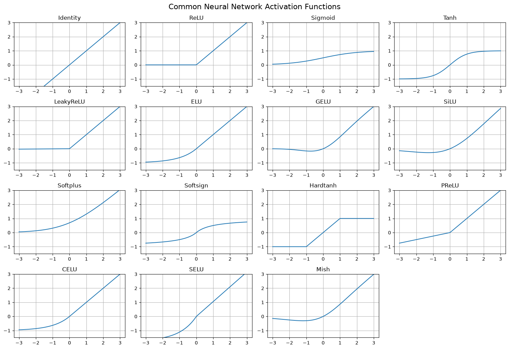
9.2 Unsupervised Learning using Autoencoders
For this demonstration, we will construct what is fundamentally a 1D function (t) but then embed it in a higher-dimensional space (3D) using a non-linear transformation. This will allow us to compare what a linear method (PCA) can do versus a non-linear method (Autoencoder), on a simple example.
# First we create a simple line (t)t = np.linspace(-1,1,100)
# Now let's make it 3D and add some (optional) noisenoise_level =0.01# You can try out different functions below by uncommenting/commenting them#X = np.vstack([t,1*t**2,-1*t**3, 0.4*t**5,t**2-t**3,-0.4*t**4]).T#X = np.vstack([2*np.sin(3*t),1*t**2,-1*t**3, 2*np.sin(6*t+1)-t**3,2*np.cos(3*t)]).Tnp.random.seed(SEED)X = np.vstack([np.sin(2*t),1*t**2,1*np.cos(5*t)]).T + noise_level*np.random.randn(len(t),3)
We can see that it results in 100 points each of which has three dimensions:
X.shape
(100, 3)
We can attempt to reduce the dimensionality of this data using PCA, but as we can already see from the 3D plot, the data is not linearly embedded in 3D space, so PCA will not be able to find a good low-dimensional representation:
pca = PCA(3)Z_PCA =pca.fit_transform(X)plt.figure()plt.scatter(Z_PCA[:,0],Z_PCA[:,1],s=15)plt.xlabel('PCA Dim 1')plt.ylabel('PCA Dim 2')plt.title('PCA Projection on the first two principal components')plt.show()
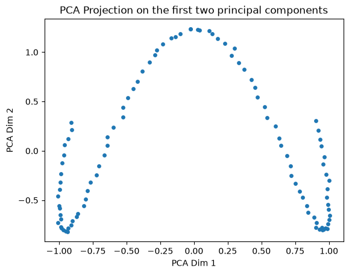
And we can also see this reflected in the explained variance, which shows that we need all three original dimensions to explain the variance in the data, even though we know that the data fundamentally lies on a 1D manifold:
We can see below what happens if we try to truncate PCA to only two dimensions and then reconstruct back to 3D space. The reconstruction is not very good, as expected, and what do you notice about the shape of the reconstructed data?
Show Code
fig = plt.figure()ax = fig.add_subplot(projection='3d')pca_2d = PCA(2)Z_PCA = pca_2d.fit_transform(X)X_PCA= pca_2d.inverse_transform(Z_PCA)ax.scatter(X[:,0], X[:,1], X[:,2],alpha=0.5)ax.scatter(X_PCA[:,0], X_PCA[:,1], X_PCA[:,2])ax.set_xlabel('$X_0$')ax.set_ylabel('$X_1$')ax.set_zlabel('$X_2$')ax.elev=35ax.azim=10plt.title("PCA Reconstruction with only two components")plt.show()
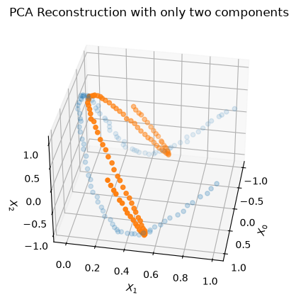
Now let’s see how this works using an autoencoder. We will use a very simple architecture with just one hidden layer in the encoder and one hidden layer in the decoder, and we will start with a three-dimensional latent space, even though we know that the data is fundamentally 1D (the experiment below asks you to try a 1D latent space and see why that is harder than it sounds). You will have the option in the below code to change the number of hidden units in the encoder and decoder, as well as the number of latent dimensions, and see how this affects the results.
class Encoder(nn.Module):def__init__(self, num_input, num_latent,num_hidden):super().__init__()self.num_input = num_inputself.num_latent = num_latentself.num_hidden = num_hidden# I encourage you to modify the architecture here by adding more layers or changing activation functions, if you wishself.encode = nn.Sequential( nn.Linear(self.num_input, self.num_hidden), nn.ReLU(),#nn.Linear(self.num_hidden, self.num_hidden),#nn.ReLU(), nn.Linear(self.num_hidden, self.num_latent), )def forward(self, X): encoded =self.encode(X)return encodedclass Decoder(nn.Module):def__init__(self, num_input, num_latent,num_hidden):super().__init__()self.num_input = num_inputself.num_latent = num_latentself.num_hidden = num_hiddenself.decode = nn.Sequential( nn.Linear(self.num_latent, self.num_hidden), nn.ReLU(),#nn.Linear(self.num_hidden, self.num_hidden),#nn.ReLU(), nn.Linear(self.num_hidden, self.num_input) )def forward(self, Z): decoded =self.decode(Z)return decodedclass AutoEncoder(nn.Module):def__init__(self, num_input,num_latent,num_hidden):super().__init__()self.num_input = num_inputself.num_latent = num_latentself.num_hidden = num_hiddenself.encoder = Encoder(num_input =self.num_input, num_latent =self.num_latent, num_hidden =self.num_hidden)self.decoder = Decoder(num_input =self.num_input, num_latent =self.num_latent, num_hidden =self.num_hidden)def forward(self, X): encoded =self.encoder(X) decoded =self.decoder(encoded)return decoded, encoded # <- return a tuple of two valuesdef transform(self,X):'''Take X and encode to latent space'''returnself.encoder(X)def inverse_transform(self,Z):'''Take Z and decode to X space'''returnself.decoder(Z)
# Here we can set some parameters for the autoencoder that we are about to train# What happens if you change them?# e.g., increase/decrease num_latent, num_hidden, learning rate, weight decaynum_points, D_orig = X.shapenum_latent =3num_hidden =5# Unlike the rest of this notebook, we deliberately do not reseed here: each time you# re-run this cell (and the training cell below), the network starts from new random# weights, so you can see how much the result varies from run to run.model = AutoEncoder(D_orig,num_latent,num_hidden)# Create the optimizer object:# AdamW optimizer (Adam with decoupled weight decay) with learning rate and weight decay# I encourage you to try out different learning rates and weight decays and# observe their effect on the modeloptimizer = optim.AdamW(model.parameters(), lr=1e-3, weight_decay=1e-2)# Add a mean-squared error losscriterion = nn.MSELoss()
X_torch = torch.from_numpy(X)X_torch = X_torch.float()# Depending on the model architecture you use, you may need to increase or decrease this to get good trainingepochs=10000for epoch inrange(epochs): loss =0 optimizer.zero_grad()# compute reconstructions decoded, encoded = model(X_torch)# compute training reconstruction loss train_loss = criterion(decoded, X_torch)# Total Loss loss = train_loss # compute accumulated gradients loss.backward()# perform parameter update based on current gradients optimizer.step()# display the epoch training lossif epoch%500==0:print("epoch : {}/{}, loss = {:.6f}".format(epoch +1, epochs, loss.item()))
epoch : 1/10000, loss = 0.639043
epoch : 501/10000, loss = 0.051612
epoch : 1001/10000, loss = 0.025585
epoch : 1501/10000, loss = 0.022820
epoch : 2001/10000, loss = 0.020838
epoch : 2501/10000, loss = 0.013447
epoch : 3001/10000, loss = 0.005840
epoch : 3501/10000, loss = 0.003067
epoch : 4001/10000, loss = 0.002534
epoch : 4501/10000, loss = 0.002365
epoch : 5001/10000, loss = 0.002286
epoch : 5501/10000, loss = 0.002073
epoch : 6001/10000, loss = 0.001919
epoch : 6501/10000, loss = 0.001701
epoch : 7001/10000, loss = 0.000241
epoch : 7501/10000, loss = 0.000000
epoch : 8001/10000, loss = 0.000000
epoch : 8501/10000, loss = 0.000000
epoch : 9001/10000, loss = 0.000000
epoch : 9501/10000, loss = 0.000000
Now that the model is trained, we can put the data through the encoder and decoder to pull out both the encoded (i.e., latent) representation of each point, as well as the decoded (i.e., reconstructed) version of each point, and visualize the results.
decoded, encoded = model(X_torch)
First, let’s take a look at the reconstructed data in the original 3D space, compared to the original data:
Let’s see how the encoded (i.e., latent) points actually look in Z space:
Show Code
Z = encoded.cpu().detach().numpy()# Only works if num_latent >=2if num_latent>=2: plt.figure() plt.scatter(Z[:,0],Z[:,1]) plt.xlabel('z1') plt.ylabel('z2') plt.title('Latent Space Representation of the autoencoder') plt.show()
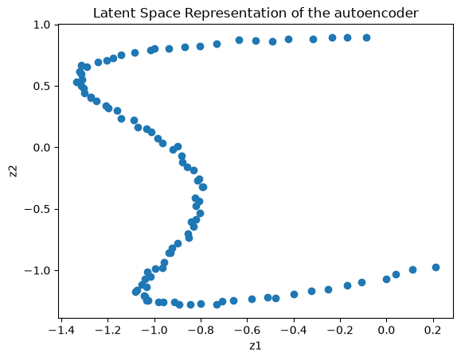
Show Code
plt.figure()plt.plot(Z[:,0],marker='+')plt.xlabel('index')plt.ylabel('$z_0$')plt.title('Latent Dimension 0 values for each data point')plt.show()
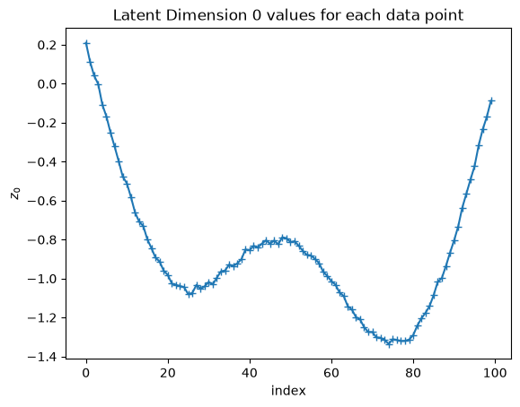
We can also look at a pairplot of the points in the latent space to get a sense of how the different dimensions correlate with each other:
Show Code
df = pd.DataFrame(Z, columns=[f'z{i}'for i inrange(Z.shape[1])])sns.pairplot(df)plt.suptitle('Latent Space Pairplot', y=1.02)plt.show()
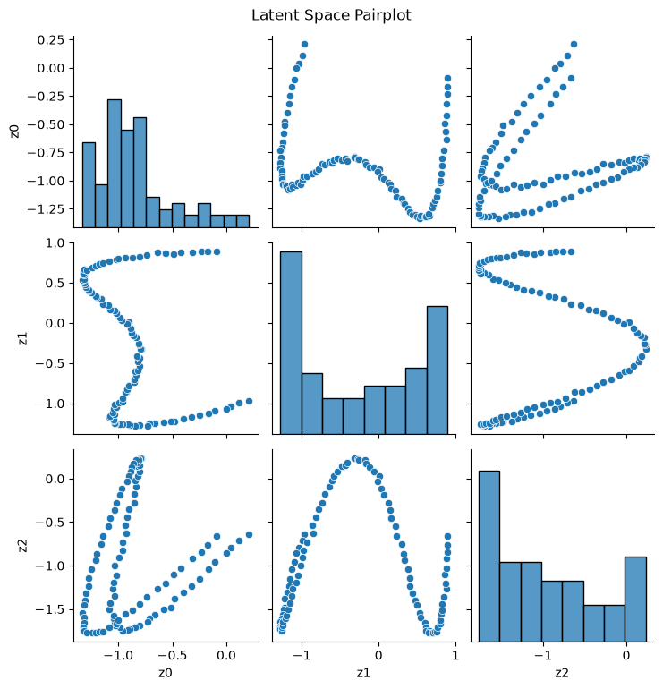
TipExperiment: Effect of Autoencoder Architecture on Reconstruction Accuracy and Latent Space Behavior
Revisit the above autoencoder code and experiment by changing the number of hidden units, the bottleneck (latent) dimension, and the number of layers in the encoder and decoder. How do these changes affect the reconstruction accuracy and the behavior of the learned latent space? Consider some of the below questions:
We know that the data is fundamentally 1D, but why does setting the autoencoder latent dimension to 1 not work well? Why might it be useful to have a latent dimension larger than the true dimensionality of the data for this type of model?
What happens if you set the latent dimension to be three or larger? Why do you think this happens? What have we given up by doing this?
As you increase or decrease the number of hidden units in Autoencoder, how does this affect the reconstruction accuracy? Why do you think this is? Consider in particular the case where the number of hidden units is one or two.
Unlike in PCA, when we re-run the autoencoder training, we get different results each time. Why do you think this is? (The cell that creates the autoencoder is deliberately not seeded, so re-running it and the training cell gives a new random start each time.)
Unlike PCA, the autoencoder does not guarantee that the latent dimensions are orthogonal or ordered by importance (e.g., \(z_0\) being more important than \(z_1\), etc.). Do you see any evidence of this in the learned latent space? Why do you think this is?
The Autoencoder used a ReLU activation function in the hidden layers. How does this manifest in the way that the network reconstructs the data? (Note, this may only be visible if you set the latent dimension to 1 and the number of hidden units to a small number, e.g., 2 or 3).
We can see that when we set the latent dimension to two or greater, the autoencoder can reconstruct the data well, but it is not capturing the intrinsic dimensionality of the data. One way we might do this is by adding L1 regularization to the latent space coordinates. You will find this penalty commented out in the training loop of the deeper autoencoder in the next section. Try adding in this regularization, either there or in the training loop above (where the latent codes are called encoded). Does it fix the problem?
9.3 A Deeper Autoencoder, Before Least Volume Regularization
One of the problems that we saw in Autoencoders is that the latent space does not have any particular structure, and in particular, it is not guaranteed to be ordered, in the same sense as PCA. It was also difficult for us to determine the exact “size” of the latent dimension, since, as we saw, setting the latent dimension to 1 did not work well, even though we knew that the data was fundamentally 1D, due to training variability and the fact that the autoencoder could get trapped in local minima. One possible solution to this is to add a regularization term that encourages the latent space to be small in some sense. One such regularization is called Least Volume Regularization, which encourages the latent space to have a small volume by penalizing the volume of the encoded points in the latent space. Before we add it, let’s first train a deeper autoencoder without any regularization, so that we have something to compare against.
Show Code
class _Combo(nn.Module):def forward(self, input):returnself.model(input)class LinearCombo(_Combo):def__init__(self, in_features, out_features, activation=nn.LeakyReLU(0.2)):super().__init__()self.model = nn.Sequential( nn.Linear(in_features, out_features), activation )class MLP(nn.Module):"""Regular fully connected network generating features. Args: in_features: The number of input features. out_feature: The number of output features. layer_width: The widths of the hidden layers. combo: The layer combination to be stacked up. Shape: - Input: `(N, H_in)` where H_in = in_features. - Output: `(N, H_out)` where H_out = out_features. """def__init__(self, in_features: int, out_features:int, layer_width: list, combo = LinearCombo ):super().__init__()self.in_features = in_featuresself.out_features = out_featuresself.layer_width =list(layer_width)self.model =self._build_model(combo)def forward(self, input):returnself.model(input)def _build_model(self, combo): model = nn.Sequential() idx =-1for idx, (in_ftr, out_ftr) inenumerate(self.layer_sizes[:-1]): model.add_module(str(idx), combo(in_ftr, out_ftr)) model.add_module(str(idx+1), nn.Linear(*self.layer_sizes[-1])) # type:ignorereturn model@propertydef layer_sizes(self):returnlist(zip([self.in_features] +self.layer_width,self.layer_width + [self.out_features]))
ambient_dim = X.shape[1]# Change the below latent dimension to see what happens to the embedded pointslatent_dim =3width = ambient_dim *16torch.manual_seed(SEED)encoder = MLP(ambient_dim, latent_dim, [width] *4)decoder = MLP(latent_dim, ambient_dim, [width] *4)opt = torch.optim.Adam(list(encoder.parameters()) +list(decoder.parameters()), lr=1e-4)
# Set X to a torch tensor:X_torch = torch.from_numpy(X).float()for i inrange(5000): opt.zero_grad() z = encoder(X_torch) rec_loss = F.mse_loss(decoder(z), X_torch) loss = rec_loss# If you want, you can even add an L1 penalty on the latent space# to try to encourage sparsity by uncommenting the line below:#loss += 1e-3 * torch.mean(torch.abs(z)) loss.backward() opt.step()if (i+1) %100==0:print(f'Epoch {i:4}: rec = {rec_loss:.5g}')
Now that the autoencoder has been trained, let’s take a look at the standard deviation of the embedded points (i.e., in \(z\)). We can sort the latent dimensions according to which dimensions have the highest standard deviation in Z.
Show Code
encoder.eval()decoder.eval()# Embed the data into Z using the trained encoderwith torch.no_grad(): z = encoder(X_torch)# Now let's sort the latent codes by which ones have the# largest standard deviation in Z:idx = z.std(0).argsort(descending=True)plt.figure()plt.bar(np.arange(z.std(0).size(-1)), z.std(0)[idx])plt.title('latent STDs (autoencoder)')plt.show()
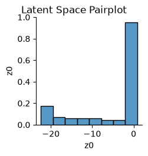
As with before, we can plot some of the data points in Z space:
We can also plot the covariance among the latent codes of the embedded data:
Show Code
cov = z.T[idx].cov().detach().cpu().numpy()plt.matshow(cov, cmap='Reds')for (i, j), var in np.ndenumerate(cov): plt.gca().text(j, i, '{:.3e}'.format(var), ha='center', va='center')plt.title('Latent Covariance Matrix')plt.show()
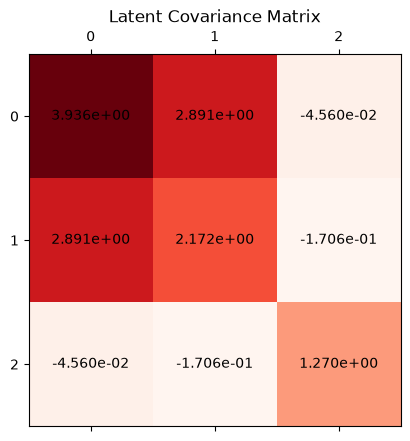
We can also get a general idea about how well we are reconstructing the original data by comparing the ground truth values versus predicted (i.e., encoded then decoded) data points – this is often called a parity plot:
Lastly, we can visualize a pairplot of the latent space to see how the different dimensions correlate with each other:
Show Code
df = pd.DataFrame(z.cpu().detach().numpy(), columns=[f'z{i}'for i inrange(z.shape[1])])sns.pairplot(df)plt.suptitle('Latent Space Pairplot', y=1.02)plt.show()
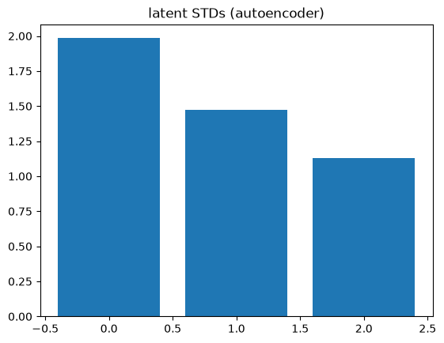
9.4 How might we select the right order in an Autoencoder? Building the case for Least Volume Analysis (LVA)
Our explorations above exposed both the advantages and disadvantages of using non-linear maps to attempt to embed and capture the underlying distribution and topology of the data.
Below we describe the basic principle of “Least Volume” regularization in Autoencoders and demonstrate how it can be useful in providing automated order selection in over-parameterized Autoencoders. It can allow us to capture relevant topological structure, but with minimal dimension.
In general, the idea behind least volume is that we want to encourage the latent space to take up as little volume as possible, while still being able to reconstruct the data well. This can be achieved by adding a regularization term to the loss function that penalizes the volume of the latent space. A simple way to do this is to penalize the geometric mean of the standard deviation of the latent dimensions, which encourages the latent space to be small in all dimensions. Specifically, we can minimize the product of all elements of the latent code’s standard deviation vector \(\prod \sigma\), which is equivalent to minimizing the exponential of the mean of the log of the standard deviation vector:
We add a small constant η to avoid numerical issues when any one of the standard deviations in any dimension approaches zero – that is when the autoencoder eliminates a dimension, and thus \(\prod \sigma\) would have a zero in the product. This loss term can be added to the reconstruction loss, weighted by a hyperparameter λ, to form the total loss.
In principle, while this loss can encourage the latent space to reduce its volume, there is one catch: the autoencoder could simply scale up the weights in the encoder and decoder to make the latent space arbitrarily small, while still being able to reconstruct the data well. To prevent this, we have to prevent the decoder from being able to arbitrarily increase its weights, and one easy way to enforce this is through spectral normalization on the weights of the decoder, which constrains the Lipschitz constant of the decoder to be at most 1. Because the decoder cannot scale up its weights too much, the encoder cannot easily defeat the volume penalty by isotropically shrinking the weights, and thus the only way to achieve a good volume penalty is to actually reduce dimensions.
Fun Fact: It turns out that in the case of an Autoencoder that only uses Linear layers, and with no activation functions, the least volume penalty is equivalent to PCA. That is, PCA can be seen as a special case of Least Volume Autoencoder. For more details on the mathematical proof, see Proposition 15 in the original paper.
Below code implements the spectral normalized decoder:
from torch.nn.utils.parametrizations import spectral_normclass SNLinearCombo(_Combo):def__init__(self, in_features, out_features, activation=nn.LeakyReLU(0.2)):super().__init__()self.model = nn.Sequential( spectral_norm(nn.Linear(in_features, out_features)), activation )class SNMLP(MLP):def__init__(self, in_features: int, out_features: int, layer_width: list, combo=SNLinearCombo):super().__init__(in_features, out_features, layer_width, combo)def _build_model(self, combo): model = nn.Sequential() idx =-1for idx, (in_ftr, out_ftr) inenumerate(self.layer_sizes[:-1]): model.add_module(str(idx), combo(in_ftr, out_ftr))# Note here is the main difference: the last layer also has spectral normalization# This was not the case in the previous MLP definition model.add_module(str(idx+1), spectral_norm(nn.Linear(*self.layer_sizes[-1])))return model
width = ambient_dim *16torch.manual_seed(SEED)# Note in particular the lack of the bottleneck choice below# That is, we don't need to actually pick a bottleneck dimension -- LVA tries to determine this automatically, like PCAencoder = MLP(ambient_dim, ambient_dim, [width] *4)# Note also the change in the decoder to have spectral normalizationdecoder = SNMLP(ambient_dim, ambient_dim, [width] *4)opt = torch.optim.Adam(list(encoder.parameters()) +list(decoder.parameters()), lr=1e-3)
η, λ =0.01, 0.01for i inrange(20000): opt.zero_grad() z = encoder(X_torch) rec_loss = F.mse_loss(decoder(z), X_torch)# Note below the least volume loss vol_loss = torch.exp(torch.log(z.std(0) + η).mean()) loss = rec_loss + λ * vol_loss loss.backward() opt.step()if (i+1) %1000==0:# Print floats with 5 significant digits and fill epoch with leading spaces if under 4 digitsprint(f'Epoch {i:4}: rec = {rec_loss:.5g}, vol = {vol_loss:.5g}')
encoder.eval()decoder.eval()with torch.no_grad(): z = encoder(X_torch)idx = z.std(0).argsort(descending=True)plt.scatter(z[:, idx[0]].cpu().detach().numpy(), z[:, idx[1]].cpu().detach().numpy(), s=10)plt.gca().set_aspect('equal')plt.xlabel('$z_0$')plt.ylabel('$z_1$')plt.show()plt.scatter(z[:, idx[0]].cpu().detach().numpy(), z[:, idx[2]].cpu().detach().numpy(),s=10)plt.gca().set_aspect('equal')plt.xlabel('$z_0$')plt.ylabel('$z_2$')plt.show()# Plot the latent STDs by magnitude in the sorted order:plt.figure()plt.bar(np.arange(z.std(0).size(-1)), z.std(0)[idx])plt.title('latent STDs (least-volume autoencoder)')plt.show()
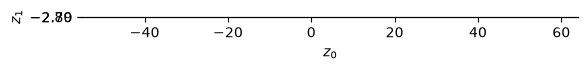
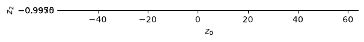
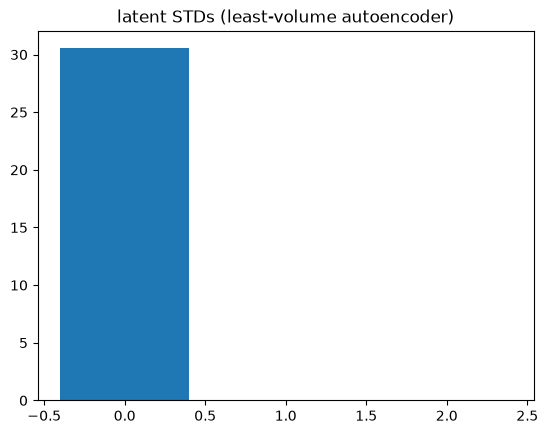
Compare this bar chart with the one for the plain autoencoder above. The plain autoencoder spread the curve over all three latent dimensions (standard deviations of about 2.0, 1.5 and 1.1), while the least-volume autoencoder keeps far fewer: in this run, one dimension carries almost everything (a standard deviation of about 31) and the other two have collapsed to about 0.005 and 0.001. Do not read too much into the exact count, though. With \(\lambda = 0.01\) it is not guaranteed; with other random seeds the same code keeps two active dimensions instead of one.
Plotting the latent code covariances:
Show Code
cov = z.T[idx].cov().detach().cpu().numpy()plt.matshow(cov, cmap='cool')for (i, j), var in np.ndenumerate(cov): plt.gca().text(j, i, '{:.2e}'.format(var), ha='center', va='center')plt.title('Latent Covariance Matrix')plt.show()
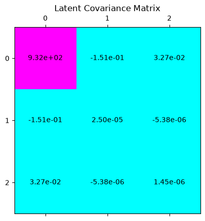
Show Code
df = pd.DataFrame(z.cpu().detach().numpy(), columns=[f'z{i}'for i inrange(z.shape[1])])sns.pairplot(df)plt.suptitle('Latent Space Pairplot', y=1.02)plt.show()
The exercises reuse the chapter’s data, networks and training loops, so run the chapter’s cells first. Rough time estimates are in the titles.
NoteExercise 1 (~10 min): Count the parameters
Each nn.Linear(n_in, n_out) layer holds a weight matrix with n_out rows and n_in columns and a bias vector with n_out entries. Counting them by hand is a quick check that you know what a network definition actually builds. You can check your counts afterwards with sum(p.numel() for p in model.parameters()).
How many trainable parameters does the chapter’s first autoencoder, AutoEncoder(D_orig, num_latent, num_hidden) with D_orig = 3, num_latent = 3 and num_hidden = 5, have? Count layer by layer through the Encoder and Decoder classes. Why do the nn.ReLU() layers add nothing to the count?
How many trainable parameters does the least-volume encoder, MLP(ambient_dim, ambient_dim, [width] * 4) with ambient_dim = 3 and width = 48, have? Its layers are built in a loop by MLP._build_model. Which layers hold most of the parameters, and why?
Show Code
# You can use this code cell for this exercise, if you like.
Exercise 2 changes the loss function. Run the cell below. It copies the training targets y_train into y_train_faulty and replaces two readings with the value 3, as a faulty sensor might. It also defines make_mlp(seed), which builds the chapter’s deep network from the list-expansion cell (four hidden layers of 7 ReLU units) with fresh random weights. The default seed is the chapter’s SEED.
Show Code
# Two faulty sensor readings: copy the training targets and corrupt two of themfaulty_points = [3, 10] # the readings at x = 0.010 and x = -0.559y_train_faulty = y_train.copy()y_train_faulty[faulty_points] =3.0def make_mlp(seed=SEED, activation=nn.ReLU, hidden_size=7, num_hidden_layers=3):"""The chapter's deep network (1 -> 7 -> 7 -> 7 -> 7 -> 1) with fresh random weights.""" torch.manual_seed(seed) layers = [nn.Linear(1, hidden_size), activation()]for _ inrange(num_hidden_layers): layers.append(nn.Linear(hidden_size, hidden_size)) layers.append(activation()) layers.append(nn.Linear(hidden_size, 1))return nn.Sequential(*layers)plt.figure()plt.scatter(X_train, y_train_faulty, c="tab:blue", s=20, label="training data")plt.scatter(X_train[faulty_points], y_train_faulty[faulty_points], c="tab:red", s=60, label="faulty readings")plt.plot(X_plot, true_func(X_plot), "k--", lw=1, label="true function")plt.xlabel("x")plt.ylabel("y")plt.legend(loc="center left", bbox_to_anchor=(1.0, 0.5))plt.show()
NoteExercise 2 (~15 min): Change the loss
The chapter trains every network with the mean squared error, nn.MSELoss(). Here you change that choice and see what it does to the fit.
Copy the chapter’s training loop and train two networks from make_mlp() on y_train_faulty: one with nn.MSELoss() and one with the mean absolute error, nn.L1Loss(). Plot both fits together with the data. How do the two fits differ near the faulty readings and away from them? Why is the squared loss pulled so much more toward the faulty readings?
(Optional) Suppose you know that the response is symmetric, \(f(x) = f(-x)\). Go back to the clean y_train and add the term torch.mean((model(x_extra) - model(-x_extra))**2) to the loss, where x_extra is a tensor of extra inputs that you choose, for example torch.linspace(0, 1.5, 31).reshape(-1, 1). These inputs need no measured outputs. Compare the fits with and without this term, especially outside \([-1, 1]\) and for \(x > 0.25\), where the training data are sparse. Why can a term that uses no measured outputs improve the fit?
Show Code
# You can use this code cell for this exercise, if you like.
Run the cell below to produce the figure for Exercise 3. It trains the chapter’s deep network three times, each time with a different activation function, using the chapter’s settings (Adam with learning rate 0.05, 5000 epochs, mean squared error). This takes about a minute. The shaded bands mark \(|x| > 1\), where there are no training data.
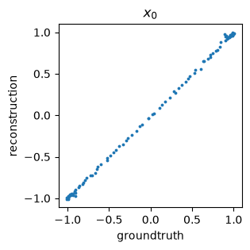
NoteExercise 3 (~10 min): Match the activation
Fits A, B and C above were trained with ReLU, Tanh and ELU activations, in some order.
Which activation produced which fit, and why? Use the chapter’s gallery of activation functions and say what gave each one away.
Why does the shape of the activation function show up most clearly outside the training data?
Check one of your answers: set activation in the chapter’s list-expansion cell to the activation you picked for one of the fits, re-run that cell and the training and plotting cells below it, and compare. Which features of the fit come back, and why might the details differ?
(Optional) Keep activation = nn.ReLU and re-run the list-expansion cell and the training cells with a few other seeds, for example torch.manual_seed(0) up to torch.manual_seed(9) in place of torch.manual_seed(SEED). For some seeds the fit is a flat line. Why does this happen with ReLU?
Show Code
# You can use this code cell for this exercise, if you like.
Exercise 4 compares the chapter’s volume penalty with two simpler ones. The first cell below sets up the penalties for part (a): the chapter’s geometric mean is written for you, and naive_volume and mean_std are left for you to fill in.
The second cell plots precomputed training runs for parts (b) and (c). Each run trains the chapter’s least-volume autoencoder on the chapter’s curve for 5000 steps without any penalty, so that it starts from a good three-dimensional code, and then for 10000 more steps with one of the penalties at \(\lambda = 0.01\) (the dotted line marks the switch). The top row shows the sorted latent standard deviations. The middle row shows how hard the penalty pushes on each of them, \(|\lambda\, \partial P / \partial \sigma_i|\), the gradient of the weighted penalty \(\lambda P\) with respect to each standard deviation \(\sigma_i\). The bottom row shows the reconstruction error, as a running median over 500 steps, with the run that never gets a penalty in gray. The figure shows seed 0; the data file also holds seeds 1 and 2, which you can see by changing seed in the cell.
Show Code
def geometric_volume(std, eta=0.01):"""The chapter's least-volume penalty: the geometric mean of the (shifted) standard deviations."""return torch.exp(torch.log(std + eta).mean())def naive_volume(std):"""The product of the standard deviations (write this one)."""passdef mean_std(std):"""The arithmetic mean of the standard deviations (write this one)."""passdef compare_penalties(penalties, std_values=((2.0, 1.5, 0.01), (2.0, 1.5, 0.0))):"""Print each penalty's value and its gradient with respect to each standard deviation."""for values in std_values:print(f"std = {values}")for penalty in penalties: std = torch.tensor(values, requires_grad=True) value = penalty(std) value.backward()print(f" {penalty.__name__:>16}: value {value.item():.4f}, gradient {np.round(std.grad.numpy(), 4)}")# Add naive_volume and mean_std to this list once you have written themcompare_penalties([geometric_volume])
NoteExercise 4 (~15 min): Three ways to penalize volume
The chapter penalizes the geometric mean of the latent standard deviations, \(\left(\prod_{i=1}^{d} (\sigma_i + \eta)\right)^{1/d}\), computed as torch.exp(torch.log(z.std(0) + η).mean()). Two simpler choices come to mind: the volume itself, \(\prod_{i=1}^{d} \sigma_i\), and the arithmetic mean, \(\frac{1}{d}\sum_{i=1}^{d} \sigma_i\).
Write naive_volume(std) and mean_std(std) in the first cell above and add them to the compare_penalties call. For \(\sigma = (2.0, 1.5, 0.01)\) and \(\sigma = (2.0, 1.5, 0)\) with \(\eta = 0.01\), which penalty pushes hardest on which dimension? Why does the product stop pushing on the first two dimensions once the third is zero?
In the figure, which penalties remove the third dimension? Compare the middle row with your numbers from (a): why does the push on the two surviving dimensions drop by several orders of magnitude under the product, but not under the other two penalties?
Why is the reconstruction error with the arithmetic mean several times larger than with the other two penalties? Why is the way the geometric mean spreads its push over the dimensions what we want from a volume penalty?
NoteExercise 5 (~10 min): Count the linear pieces
A network with one hidden layer of \(h\) ReLU units computes \(f(x) = b + \sum_{j=1}^{h} v_j \max(0,\, w_j x + c_j)\). The cell below fits such networks to the chapter’s training data for the widths in hidden_units, with three seeds each (Adam with learning rate 0.02, 2500 epochs), and plots the fits over \([-1.5, 1.5]\).
Before you run anything: what is the largest number of linear pieces that a network with \(h\) units can produce? Why?
Run the cell as it is, with hidden_units = [2]. How many linear pieces does each fit have? Why can none of them follow the W shape of the data?
Change the list to [2, 4, 6, 8, 16] and re-run the cell (about a minute). How many units does the network need before it follows the W in all three seeds? The W needs only four linear pieces, so why does the network need more units than that? Exercise 3(d) may help.
Show Code
def fit_relu_layer(h, seed, epochs=2500, learning_rate=0.02):"""Fit a network with one hidden layer of h ReLU units to the chapter's training data.""" torch.manual_seed(seed) net = nn.Sequential(nn.Linear(1, h), nn.ReLU(), nn.Linear(h, 1)) optimizer = torch.optim.Adam(net.parameters(), lr=learning_rate) inputs, targets = torch.from_numpy(X_train), torch.from_numpy(y_train)for epoch inrange(epochs): loss = nn.functional.mse_loss(net(inputs), targets) optimizer.zero_grad() loss.backward() optimizer.step()return netdef plot_relu_fits(hidden_units, seeds=(0, 6, 9)):"""One column per width h, one row per seed.""" x_fine = np.linspace(-1.5, 1.5, 601).reshape(-1, 1).astype(np.float32) fig, axes = plt.subplots(len(seeds), len(hidden_units), figsize=(3.2*len(hidden_units) +1, 2.6*len(seeds)), sharex=True, sharey=True, squeeze=False)for col, h inenumerate(hidden_units):for row, seed inenumerate(seeds): net = fit_relu_layer(h, seed)with torch.no_grad(): prediction = net(torch.from_numpy(x_fine)).numpy() ax = axes[row, col] ax.plot(x_fine, true_func(x_fine), "k--", lw=0.8) ax.plot(x_fine, prediction, "tab:blue", lw=1.5) ax.scatter(X_train, y_train, c="tab:red", s=8, zorder=3) ax.set_ylim(-2, 2) ax.set_title(f"h = {h}, seed {seed}", fontsize=10)for ax in axes[-1]: ax.set_xlabel("x") plt.tight_layout() plt.show()# For part (c), change this to [2, 4, 6, 8, 16]hidden_units = [2]plot_relu_fits(hidden_units)